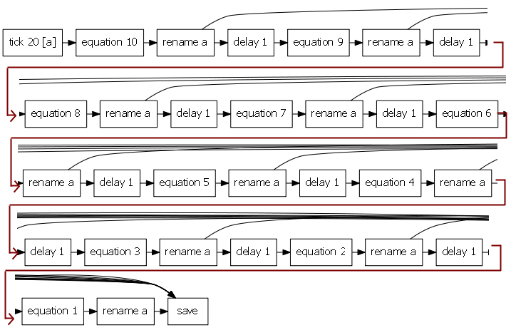

Honey | Tutorial | Advanced
This last tutorial covers the more complex (but also more interesting) features of Honey.
Execution modes
By default, Honey runs in static mode. The static mode suppose that the entire dataset can be loaded in memory. This does not have any impact on the results of the program, but this allow Honey and some of its function to be executed more efficiently. When a honey program is executed in static mode, each function is executed entirely (i.e. on all the records) before the next functions. Functions are executed in a topological ordering of the functions: If a first function requires the result of a second function, this second function will be executed after the first one. However, if two function are independent, they can be executed in any orders. In addition, since Honey knows the interdependence between functions, intermediate results are only kept in memory until Honey know their will not be used any more.
The mode of execution can be specified in the program with the @mode command, or using the --mode command line option.
Honey second execution mode is the streaming mode. In the streaming mode, the dataset file are read and processed greedily record by record. The streaming execution mode is significantly slower than the static mode. However, Honey can process large datasets that would not fit in memory.
The last execution mode of Honey is the online mode. This mode is similar to the streaming mode, but it allows the processing of real time stream of data. Note that Event Viewer can display real time stream of data. Several honey functions are specific to this mode:
- tcpclient creates a TCP client that will exchange record in the .evt format.
- tcpserver creates a TCP server that will exchange record in the .evt format.
- keyboard generates record according to the keyboard pressed keys.
- beep emits a sound of the computer sound system.
The following example generates every 0.1 second a random record with a value uniformly sampled between 0 and 1. The program also wait for the user to type commands on the console. If the user type "plot", the programs emits a sound a save a scatter plot of the random signal.
$a = tick 0.1
$a = eq $a "rand"
$k = keyboard
$k = filter $k "key_plot"
print $k every:true label:"Exporting plot"
beep $k pitch:750
plot $a trigger:$k file:random_TIME.svg
Note that while that the current version of Honey does not run on multi-threads (this will be added in a future version).
Online streaming visualization
As you can see on the previous section, Honey can be used to process real time online stream of data. In this section, and in the following video, we will see how to connect a third party program that generates signal, honey to processed this signal, and Event Viewer to visualise this signal (and the processed features) in real time.
This example illustrates how you can use Honey and Event Viewer on realtime scenario. The only requirment is for the input (and eventually control) data to be streamed in .evt format (e.g. "{time} {channel name} {value}"). This format is simple enought so that it can be generated in any language very easily (e.g. cout << evt.time << " " << evt.name << " " << evt.value << endl; in C++).
This solution is organized as follow:
- First, a Python script that, every 0.5 seconds, generates three records with three random values. The records are printed in .evt format on the console. The random value are sampled according to a Perlin Noise function (just to be nice to look at). Note that the Python script does not need to write the "time" field of the .evt. Instead Honey will write it automatically.
- The linux tool "nc" is used to connect the python script to a TCP server on the port 2002. Using telnet you can connect to this server an watch the flow of records. Not that you can use this script on Window after having installing Cygwin.
- A honey program connects (with the tcpclient function to the socat server) to the nc server on port 2002 , grab the records, computes a moving average and broadcast the result as tcp server (with the command tcpserver) on port 2003. Here again you can use a telnet client to watch the flow of records.
- Event Viewer connects to the Honey tcp server on port 2003, grab the records and display them in real time. Event viewer is configured to "follow" the signal i.e. new records will always be shown on screen. Note that is you were connecting Event Viewer directly to the nc server on port 2002, you would see the records without the processed values.
The Honey program. The Honey program and all the others files are available in the "Honey/bin/example/realtimeVisualization" directory of Honey.
The Bash should be started first (it will call the Python script), followed by the Honey program, followed by Event Viewer. To connect Event Viewer to the server, right click on the preconfigured "Connection" component, and select "Start". By default, Event Viewer will not "follow" the signal. You can enable it by clicking on "Display/Follow signal". Finally, the display window of Event Viewer might be to large (or to small when you start it). The easied solution to adjust the window is to use to well so to configure to display to cover around a minute of signal.
$empty = echo "empty"
$a = tcpclient $empty ip:127.0.0.1 port:2002
$b = sma $a 10
$b += $a
tcpserver $b port:2003
Here is a screen shot of what you should see in Event Viewer after a couple of seconds.
User defined functions
Users can define new functions using the function and endfunction commands.
The following example shows the definition and use of a function.
$all = echo #.*
function h $a %w
$r = sma $a %w
return $r
endfunction
$res = call h $all 2
save $res file:%output
User defined functions support signal and non-signal non named parameters. Functions can return signal-values with the return commands. A function can have several return commands: In this case, the returned signal-variable will be the aggregation of all the results. Currently, functions can only return signal parameters.
return outside of a function body has a different signification, and it is only used for the Honey API.
When compiled, functions are integrated into the flow network without overload.
By default, functions cannot access variables defined outside of their scope. For a function to access a variable outside of its score, you can use the global keyword. The global keyword works both on signal and non-signal variables.
Here is an example of use of global.
$all = echo #.*
function h
global $a
global %w
global $result
$result = sma $a %w
endfunction
$a = $all
set %w 2
call h
save $result file:%output
Include external source
It is often a good idea to organize complex programs into several files. You can use the command include to include a source file into another one.
call h
endfunction
Function and Process recursion
So far, all our honey programs were compiled into acyclic flow network. However, Honey actually supports cycles in flow network. Such Honey program is called "flow recursive" programs.
With the use of user defined functions, Honey programs can also contain recursion in their definition (i.e. a function calling itself). Such Honey program is called "definition recursive" programs.
Note that a "flow recursive" is necessarily "definition recursive". And vice versa.
The difference between the two types of recursion is illustrated in the following example: Suppose that we want to write an program that generates a record of name "a" and of value 10 every 20 time units. Suppose also, that 1 time unit after such record, we want the program to generate another record of the same name and of value 9. Again, 1 time unit after this second type record, we want the program to generate a record of the same name and of value 8. An so one until the value reaches the value 0. The following plot shows the expected result.
We can imagine several programs that would produce this result:
-
To generate a tick every 20 seconds; and use nine delay functions and nine eq functions to generate two nice following events of decreasing value.
This program would be as follow:
@data input:"data/100.evt" output:"result/100.evt"
$a = tick 20
$a = eq $a 10
$a = rename $a "a"
$result += $a
$a = delay $a 1
$a = eq $a 9
$a = rename $a "a"
$result += $a
$a = delay $a 1
$a = eq $a 8
$a = rename $a "a"
$result += $a
$a = delay $a 1
$a = eq $a 7
$a = rename $a "a"
$result += $a
# ... 6 more times ...
save $result file:%output
Note that if we execute the script in static or streaming mode, we need to provide a dataset to define to active of time. The dataset "100.evt" contains two records: One at time 0, and one at time 100.
-
Write a definition recursive program that would recursively call a function ten time. At each call, the function would call a delay and a eq functions. The resulting flow network would be exactly similar to the flow network of the first solution, but the program would be smaller.
This program would be as follow:
@data input:"data/100.evt" output:"result/100.evt"
$a = tick 20
$a = eq $a 10
$a = rename $a "a"
$result += $a
function h $b %i
global $result
$b = delay $b 1
$b = eq $b %i
$b = rename $b "a"
$result += $b
set %i =%i,1,-
if =%i,0,>
call h $b %i
endif
endfunction
call h $a 9
save $result file:%outputNote that the if is evaluated to build the flow network; but it is not a function of the network. if evaluates one non-signal argument, and if the numerical value of this argument of >= than 0.5, the commands until the next endif are compiled. Otherwise, all the commands between the if and the next matching endif are skiped. Note that you can encapsulate ifs.
-
Finally, the last solution is to create a flow network with a cycle. The record would be carried in the cycle and its value would be reduced by one at each turn. Finally, when it value would reach 0, the record would be filtered.
This program would be as follow:
@data input:"data/100.evt" output:"result/100.evt"
@mode streaming
$a = tick 20
$a = eq $a 10
$a = rename $a "a"
recursive $x
$x += $a
$b = delay $x 1
$b = eq $b "value,1,-"
$b = passIfFast $b minValue:0
$b = rename $b "a" keepAll:true
$x += $b
$result += echo $x
save $result file:%outputThe only specificity of the program is the line recursive $x. This line specify that the variable $x is recursive. Every record sent into a recursive variable will received by all function receiving this variable, event if the function is called before the variable assignation.
Variables can be defined recursive inside of a function, of globally in the program. The current version of Honey does not support for recursive variable to be global. In addition, recursive variables are only supported yet in streaming and online execution mode.